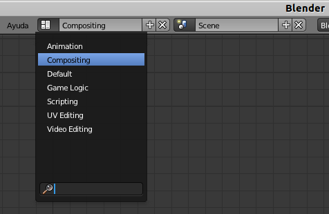
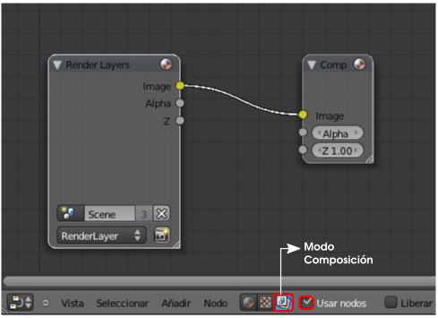
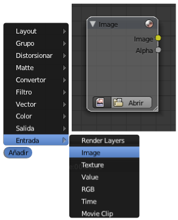
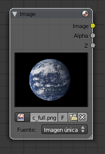
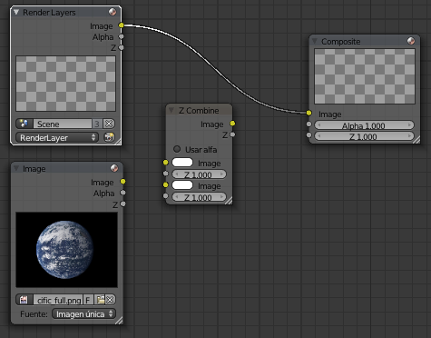
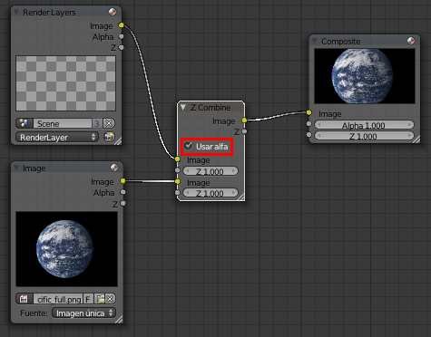
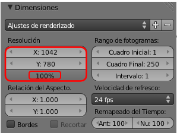
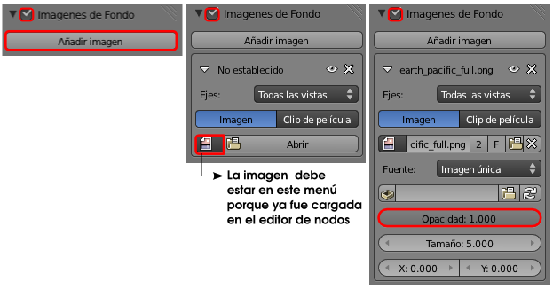
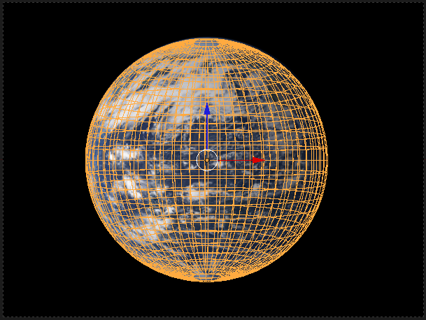
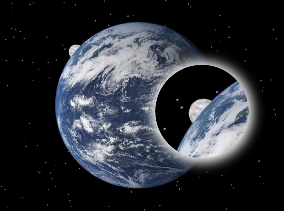

Enmascara
Un recurso interesante es el de los objetos que se renderizan transparentes. Es lo que en diseño se denomina máscara.
Tenemos una fotografía del planeta Tierra y nos proponemos un montaje para añadirle la Luna. El problema es que nos hemos planteado que el satélite en cuestión se muestre al encontrarse semioculto por el planeta Tierra.
Earth Pacific full

Earth Pacific full // Autor: NASA // Licencia: Dominio público
|
La imagen en el render
Para que la imagen aparezca en el render final debemos usar un modo de edición basado en nodos. Nosotros ahora no profundizaremos en este recurso, así que damos los requisitos necesarios para añadir la imagen.
- Eliminamos el cubo inicial (Supr).
- Cambiamos al entorno de trabajo a Compositing.

- En el Editor de Nodos
 , nos aseguramos de estar en el modo adecuado (Composición ) y de tener activada la opción Usar nodos. Esto hace aparecer en el editor dos nodos, propiamente dichos, unidos por una línea. Estos nodos pueden hacerse más grandes estirando de la esquina inferior derecha. La navegación por este editor es muy similar a la de Vista 3D (girar la rueda del ratón para hacer zoom, rueda presionada para desplazarse...).
, nos aseguramos de estar en el modo adecuado (Composición ) y de tener activada la opción Usar nodos. Esto hace aparecer en el editor dos nodos, propiamente dichos, unidos por una línea. Estos nodos pueden hacerse más grandes estirando de la esquina inferior derecha. La navegación por este editor es muy similar a la de Vista 3D (girar la rueda del ratón para hacer zoom, rueda presionada para desplazarse...).

- Usamos el menú Añadir/Entrada/Image para disponer de un nuevo nodo especialmente destinado a cargar una imagen de fondo.

- Usando el botón Abrir del nuevo nodo vamos a por la imagen de la Tierra que hemos guardado en nuestro disco duro.

- De momento el nodo Image ha quedado suelto y no forma parte de la composición final. Aún necesitamos un nuevo nodo. Usamos el mismo menú Añadir para sacar uno de tipo Color/Z Combine. Esto es lo que tenemos de momento.

- Sólo resta hacer la composición para que Blender una la imagen y el render en una misma imagen. El proceso es completamente intuitivo haciendo las uniones que se marcan en la siguiente imagen. Ni siquiera nos tenemos que preocupar de eliminar la unión que hay entre Render Layers y Composite porque desaparece al crear la nueva unión entre Z Combine y Composite. En esta composición no olvidamos activar la opción Usar alfa del nodo Z Combine para que Blender tenga en cuenta las transparencias.

- Regresamos al entorno de trabajo Default.
Ahora la imagen aparecerá en el render. Pero es más que probable que sus proporciones no coincidan. El tamaño de la imagen es 1042x780 así que usamos esas medidas para el Render  . La salida debe ser del 100%.
. La salida debe ser del 100%.

La imagen en el editor Vista 3D
Ya hemos dado la orden a Blender de que saque la imagen en el momento del render, pero nada le hemos dicho sobre mostrar la imagen en el editor Vista 3D para tenerla de referencia en el diseño. Recordamos que esto se hace desde el cuadro de Propiedades ("N") en la botonera Imágenes de Fondo. Se verá en vistas ortográficas y desde el punto de vista de la cámara.
Es el momento de aprender a hacer la máscara:
- Añadimos una esfera (Añadir/Malla/Esfera UV), le aplicamos un modificador Subdivisión, un sombreado Suave y la colocamos en el lugar adecuado desde el punto de vista de la cámara ("Control_Atl_NumPad 0").

En el Material  de esa esfera activamos Transparencia, pero donde antes escogíamos entre Transparencia Z o Trazado de rayos, ahora escogemos Enmascara y descendemos el valor de Alfa hasta 0.000.
de esa esfera activamos Transparencia, pero donde antes escogíamos entre Transparencia Z o Trazado de rayos, ahora escogemos Enmascara y descendemos el valor de Alfa hasta 0.000.
Eso es suficiente. Por ejemplo, si añadimos una nueva esfera (Añadir/Malla/Esfera UV) para simular la Luna, y siempre que quede tapada por la esfera de la máscara, este será el resultado.
El render incluye además un fondo de estrellas que aprenderemos a hacer algo más adelante. Lo incluimos para mostrar cómo incluso ese recurso se adapta a la máscara.